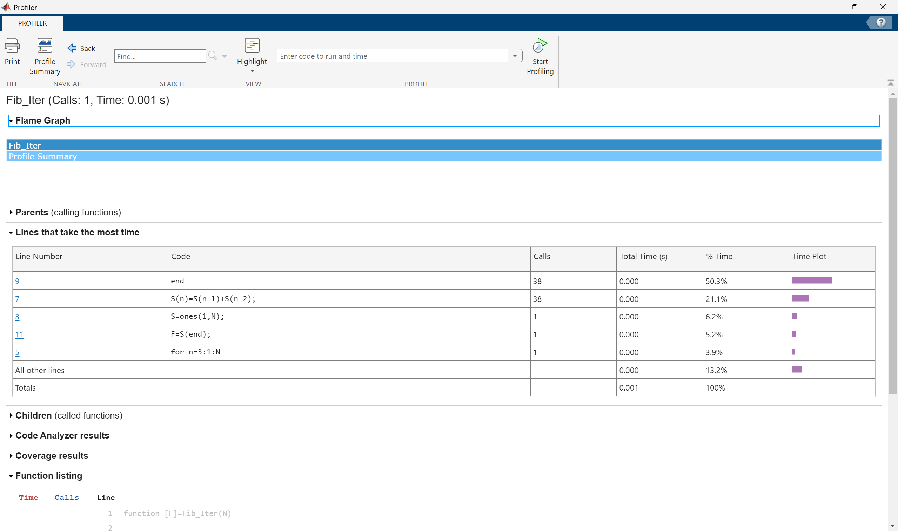
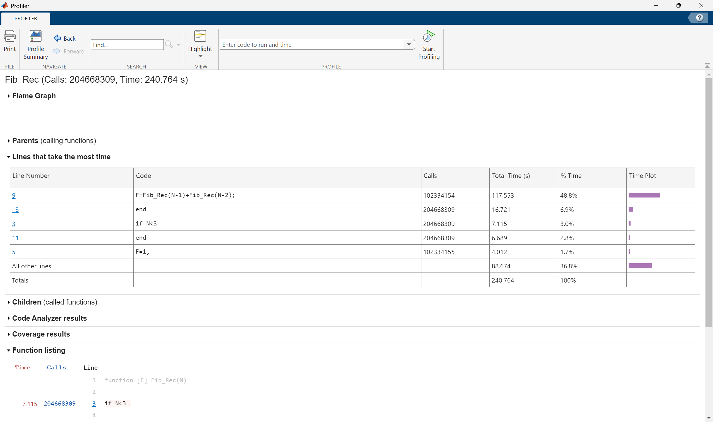

1 Internal Workings of MATLAB
1.1 Floating-Point Arithmetic
Since computers have limited resources, only a finite strict subset \(\mathcal{F}\) of the real numbers can be represented. This set of possible stored values is known as Floating-Point Numbers and these are characterised by properties that are different from those in \(\mathbb{R}\), since any real number \(x\) is – in principle – truncated by the computer, giving rise to a new number denoted by \(fl(x)\), which does not necessarily coincide with the original number \(x\).
A computer represents a real number \(x\) as a floating-point number in \(\mathcal{F}\) as \[ x = (-1)^s \times (a_1a_2\dots a_t) \times \beta^E \tag{1.1}\] where:
- \(s\in\{0,1\}\) determines the sign of the number;
- \(\beta\geq 2\) is the base;
- \(E\in\mathbb{Z}\) is the exponent.
- \(a_1a_2\dots a_t\) is the mantissa (or significand). The mantissa has length \(t\) which is the maximum number of digits that can be stored. Each term in the mantissa must satisfy \(0\leq a_i\leq\beta-1\) for all \(i=1,2,\dots,t\) and \(a_1 \neq 0\) (to ensure that the same number cannot have different representations). The digits \(a_1a_2\dots a_p\) (with \(p\leq t\)) are often called the \(p\) first significant digits of \(x\).
The set \(\mathcal{F}\) is therefore fully characterised by the basis \(\beta\), the number of significant digits \(t\) and the range of values that \(E\) can take which is \(E \in (L,U)\) with \(L < 0\) and \(U > 0\).
A computer typically uses binary representation, meaning that the base is \(\beta=2\) with the available digits \(\{0,1\}\) (also known as bits) and each digit is the coefficient of a power of 2. Available platforms (like MATLAB and Python) typically use the IEEE754 double precision format for \(\mathcal{F}\), which uses 64-bits as follows:
- 1 bit for \(s\) (either 0 or 1) to determine the sign;
- 11 bits for \(E\) (which can be \(0,1,2,\dots,10\));
- 52 bits for \(a_2 a_3 \dots a_{53}\) (since \(a_1\neq 0\), it has to be equal to 1).
This gives a total of 64-bits with \(L=-1022\) and \(U=1023\). For 32-bit storage, the exponent is at most 7 and the mantissa has 23 digits. Note that 0 does not belong to \(\mathcal{F}\) since it cannot be represented in the form shown in Equation 1.1 and it is therefore handled separately.
If a non-zero real number \(x\) is replaced by its floating-point representation \(fl(x)\in\mathcal{F}\), then there will inevitably be a round-off error which is given by \[\frac{|x-fl(x)|}{|x|}\leq \frac{1}{2}\varepsilon_M\] where \(\varepsilon_M=\beta^{1-t}\) is the machine epsilon and provides the distance between 1 and its closest floating-point number greater than 1. In the binary case, \(\varepsilon_M \approx 2.2204\cdot 10^{-16}\) (this can be found using eps(1)). In other words, the number \(u = \frac{1}{2}\varepsilon_M\) is the maximum relative error that the computer can make while representing a real number by finite arithmetic.
Moreover, since \(L\) and \(U\) are finite, one cannot represent numbers whose absolute value is either arbitrarily large or arbitrarily small. Precisely, the smallest and the largest positive real numbers of \(\mathcal{F}\) are given by \(x_{\min} =\beta^{L-1}\) and \(x_{\max} = \beta^{U}(1-\beta^{-t})\), respectively. A positive number smaller than \(x_{\min}\) yields under-flow and a positive number greater than \(x_{\max}\) yields over-flow. The elements in \(\mathcal{F}\) are more dense near \(x_{\min}\), and less dense while approaching \(x_{\max}\). However, the relative distance is small in both cases. The largest and smallest values that can be represented as floating-point numbers in MATLAB can be found using the realmin and realmax commands.
Since \(\mathcal{F}\) is a strict subset of \(\mathbb{R}\), elementary algebraic operations on floating-point numbers do not inherit all the properties of analogous operations on \(\mathbb{R}\). Precisely, commutativity still holds for addition and multiplication, i.e. \(fl(x + y) = fl(y + x)\) and \(fl(xy) = fl(yx)\). Associativity is violated whenever a situation of overflow or underflow occurs or, similarly, whenever two numbers with opposite signs but similar absolute values are added, the result may be quite inexact and the situation is referred to as loss of significant digits.
Properly handling floating point computations can be tricky sometimes and, if not correctly done, may have serious consequences. There are many webpages (and books) collecting examples of different disasters caused by a poor handling of computer arithmetic or a bad algorithmic implementation. See, for instance, see Software Bugs and the Patriot Missile Fail among others.
1.2 Computational Complexity
The Computational Complexity of a function can be defined as the relationship between the size of the input and the difficulty of running the function to completion. The size (or at least, an attribute of the size) of the input is usually denoted \(n\), for instance, for a 1-D array, \(n\) can be its length.
The difficulty of a problem can be measured in several ways. One suitable way to describe the difficulty of the problem is to count the number of basic, or Floating-Point Operations, such as additions, subtractions, multiplications, divisions and assignments. Floating-point operations, also called flops, usually measure the speed of a computer, measured as the maximum number of floating-point operations which the computer can execute in one second. Although each basic operation takes a different amount of time, the number of basic operations needed to complete a function is sufficiently related to the running time to be useful, and it is usually easy to count and less dependent on the specific machine (hardware) that is used to perform the computations.
A common notation for complexity is the Big-O notation (denoted \(\mathcal{O}\)), which establishes the relationship in the growth of the number of basic operations with respect to the size of the input as the input size becomes very large. In general, the basic operations grow in direct response to the increase in the size \(n\) of the input and, as \(n\) gets large, the highest power dominates. Therefore, only the highest power term is included in Big-O notation; moreover, coefficients are not required to characterise growth and are usually dropped (although this will also depend on the precision of the estimates).
Formally, a function \(f\) behaves as \(f(x) \sim \mathcal{O}\left(p(x)\right)\) as \(x\) tends to infinity if \[\lim_{x \to \infty}\frac{f(x)}{p(x)}=\text{constant}.\] For example, the polynomial \(f(x)=x^4+2x^2+x+5\) behaves like \(x^4\) as \(x\) tends to infinity since this term will be the fastest to grow. This can be written as \(f(x) \sim \mathcal{O}\left(x^4\right)\) as \(x \to \infty\).
Let \(f:\mathbb{N} \to \mathbb{N}\) be given by \[f(n)=\left( \sum\limits_{j=1}^{n} j\right)^2\]
This function \(f\) can be coded as fun in MATLAB as follows:
For example, \(f(3)\) should perform the overall calculation \[(1 \times 1)+(1 \times 2)+(1 \times 3)+(2 \times 1)+(2 \times 2) +( 2 \times 3) +(3 \times 1)+(3 \times 2)+(3 \times 3),\] so fun(3) should output out=36.
This code requires the following operations:
- \(1+n+2n^2\) assignments:
- 1:
out=0; - \(n\):
i=1:1:n; - \(n^2\): for every
i,j=1:1:n; - \(n^2\): for every
i,out=out+i*j;
- 1:
- \(n^2\) multiplications:
i*j; - \(n^2\) additions:
out=out+i*j.
Therefore, for any \(n\), this code will need \(4n^2+n+1\) flops, meaning that the computational complexity is \(\mathcal{O}\left(n^2\right)\), i.e. the code runs in polynomial time. It is not uncommon to find algorithms that run in exponential time \(\mathcal{O}\left(c^n\right)\), like some recursive algorithms, or in logarithmic time \(\mathcal{O}\left(\log n\right)\).
For more complicated codes, it is important to see where most of the time is spent in a code and how execution can be improved. A rudimentary way of timing can be done by the toc toc:
This will produce a simple time in seconds that MATLAB took from tic until toc, so if toc has not been types, then the timer will continue.
For more advanced analysis, MATLAB uses a Code Profiler to analyse code which includes run times for each iteration, times a code has been called and a lot more.
Suppose that a code needs to be written that finds the \({N}^{\mathrm{th}}\) Fibonacci number starting the sequence with (1,1). This can be done in two ways:
- Iteratively by having a self-contained code that generates all the terms of the sequence up to \(N\) and displays the last term.
- Recursively by have a self-referential code that keeps referring back to itself to generate last term in the sequence from the previous terms.
When running these codes for an input of \(N=10\), the times are very short, of the order of \(10^{-5}\) seconds but as \(N\) gets larger, the recursive code starts to take much longer. Suppose the code efficiency is to be analysed for the input \(N=40\), this can be done using the profiler as follows:
This will give a full breakdown of how many times every line was run and how much time it took. For Fib_Iter(40), a total of 38 operations were performed, each taking such a short amount of time that it registers as “0 seconds”.

However, performing the profiler for Fib_Rec(40) gives a dramatically different answer with the code taking nearly 247 seconds and having to call itself more than 102 million times.

This is why it is important to profile longer codes to see which parts take the longest time and which loops are the most time consuming.
To reduce computational time in general, avoid self-referential codes because these tend to grow in usage exponentially. Another important practice is to use in-built MATLAB syntax, like using sum to add elements in a vector rather than manually hard coding it. This is where being familiar with a lot of the MATLAB syntax is important; MATLAB has a lot of built-in codes and syntaxes which can save a lot of time.